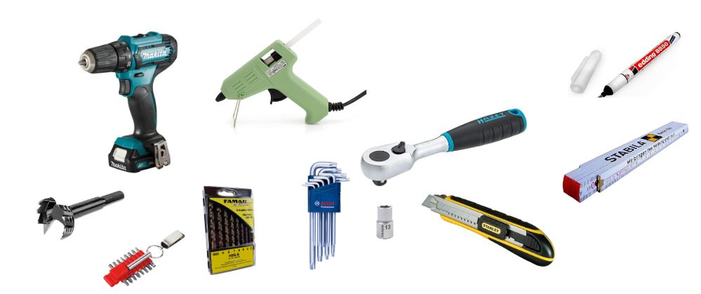
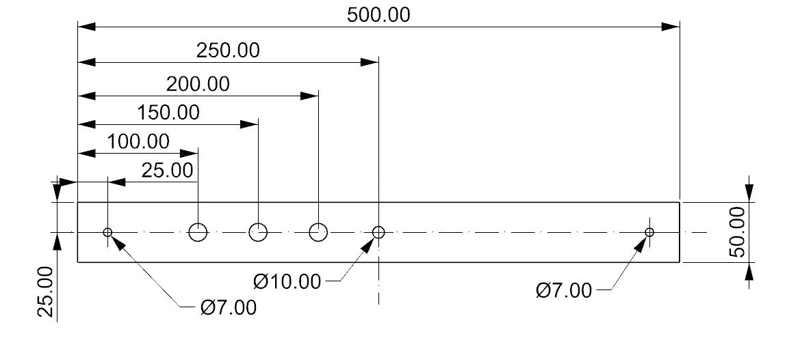
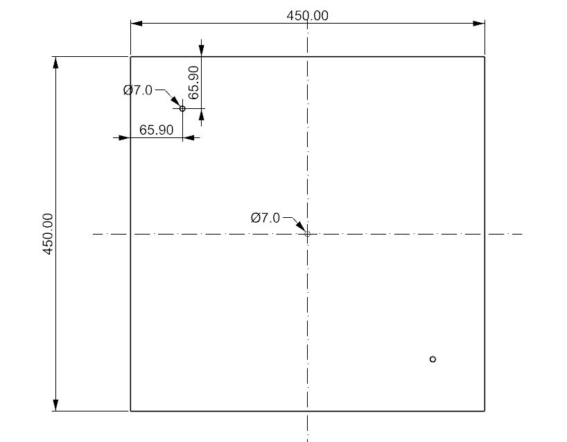

ObiOrbita Construction Manual#

This manual will guide you through the process of building and assembling your own OBI Orbita. We recommend to wait untill you have all parts so the assembly can go fast and without interruption.
name |
amount |
|---|---|
IKEA Snudda |
1 |
Naturkork Platten, geschliffen 3,0 x 202 x 456 mm |
2 |
Stahlringe verzinkt, silber ø 100 x 2-3 mm |
1 |
Stahlringe verzinkt, silber ø 200 x 3-4 mm |
1 |
Stahlringe verzinkt, silber ø 300 x 3-4 mm |
1 |
12 mm Multiplex Birke 450mm x 450mm |
1 |
12 mm Multiplex Birke 500mm x 50mm |
2 |
DIN 7991 M6 x 25 8.8 |
4 |
Distanzmuffe M6 40 mm |
2 |
DIN 1473 6 x 40 St |
1 |
12 V Dc Getriebemotor |
1 |
Schrauben und Co |
1 |
Double sided tape |
1 |
Hotglue |
1 |
Orbita electronics by Playtronica |
1 |
Bill of Material for an OBI Orbita <!— maybe link to Excell? —>
Preparations and setup#
You need some space to work on the parts and ideally a worksurface that can get used a bit. After all we are working with wood drills, hotglue and boxcutters. The whole build only needs some very basic handtools, but make sure you have all of them at hand, to avoid running into issues during the build process. You will need a battery drill, a drill bit set, a 15 mm Faustner drill or similar, Allenkeys, a box cutter, a wrench with a 13mm nut, a Hotgluegun and some measuring and marking utensils.

Needed tools for the build
Makeing the base and the bridge#
The only two parts that that completly need to be build custom for this project are the base and the bridge that carries the sensors above the turntable. These parts are made out of 12mm plywood or similar. Thes stock amterial could also be some reused wood or some different available board material, as long as the deflection is similar and the dimensions can be cut fairly accurate. We sourced our wood boards from the local hardware store, where they offer a cutting service too.
You can measure and mark the hole locations for each part by the dimensions given in the two drawings below. Another option is provided through drill templates you can print out and put on your work pieces 
Once you marked all the locations you can drill the holes with a fitting drill. The only out of the ordinary holes that need to be made are the 15 mm holes for the sensors. A Faustner drill bit makes this very easy but if you don’t have one on hand you can also drill many smaller holes on the circumference and knock the inside of the holes out. This works but the hole looks pretty rough after this process, so we highly recommend you use the proper drill. On the brige and on the base board you can countersink the two 7 mm holes so the screws that will go through these holes sit flush with the board surfaces.

Once the wooden pieces are all drilles they are ready for the assembly.
Creating the turntable#
The main part of the turntable is made of a ready made part which can be found in most kitchen ware stores. For our version we used the Ikea version of the spinning Susan but you can make it work with other models too.